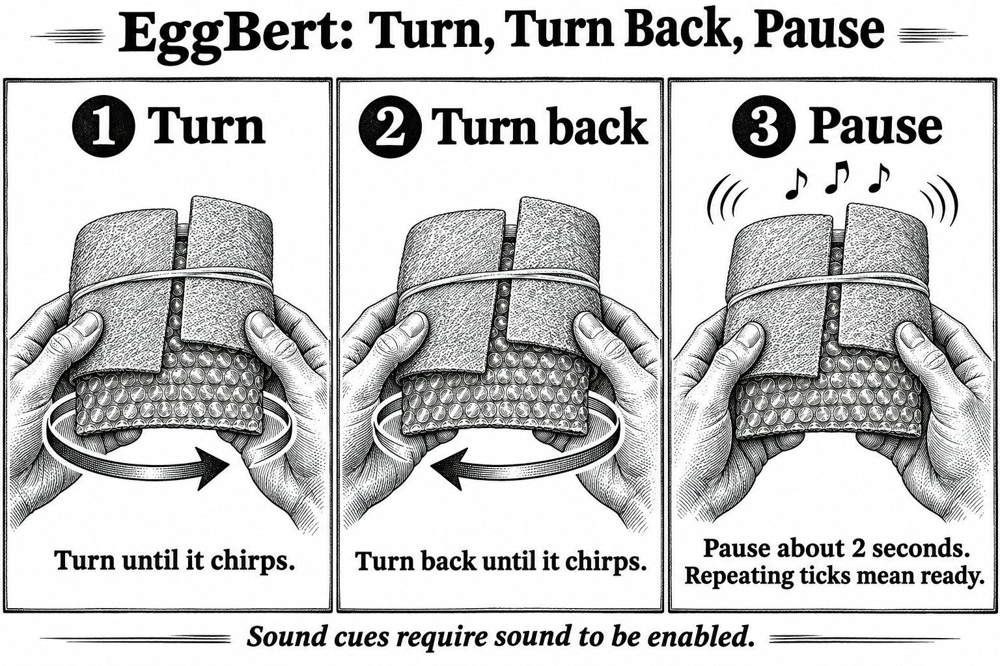

Hammer Hit Arming Procedure
Select Hammer Hit and press the middle button to begin before covering the buttons. Finish wrapping EggBert, then gently turn the whole package as shown.


Turn, turn back, pause
- Turn: rotate the wrapped package about one full turn in a comfortable direction. Listen for a chirp.
- Turn back: reverse direction around the same general axis. Listen for the second chirp.
- Pause: stop turning and hold comfortably still for about two seconds. A rising melody followed by a tick each second confirms that EggBert is armed.
Sound cues require sound to be enabled and a board with a fitted speaker. The screen also shows gesture progress and ARMED; the steady green light confirms readiness.
Handle the package gently once armed: a bump above 7 g can start recording. You have about two minutes before arming times out. Press the middle button to cancel before an impact.
After the experiment, download and save the recording before switching off or reprogramming EggBert.